전산응용기계제도기능사 (2014-04-06 기출문제)
1과목: 기계재료 및 요소
1. 강의 표면 경화법으로 금속 표면에 탄소(C)를 침입 고용 시키는 방법은?
- 질화법
- 침탄법
- 화염경화법
- 숏피닝
(정답률: 88%)

2. 비철금속 구리(Cu)가 다른 금속 재료와 비교해 우수한 것 중 틀린 것은?
- 연하고 전연성이 좋아 가공하기 쉽다.
- 전기 및 열전도율이 낮다.
- 아름다운 색을 띠고 있다.
- 구리합금은 철강 재료에 비하여 내식성이 좋다.
(정답률: 76%)
3. 다음 중 플라스틱 재료로서 동일 중량으로 기계적 강도가 강철보다 강력한 재질은?
- 글라스 섬유
- 폴리카보네이트
- 나일론
- FRP
(정답률: 66%)
4. 열처리란 탄소강을 기본으로 하는 철강으로 매우 중요한 작업이다. 열처리의 특성으로 잘못 설명한 것은?
- 내부의 응력과 변형을 감소시킨다.
- 표면을 연화시키는 등의 성질을 변화시킨다.
- 기계적 성질을 향상시킨다.
- 강의 전기적/자기적 성질을 향상시킨다.
(정답률: 44%)
5. 5~20% Zn의 황동으로 강도는 낮으나 전연성이 좋고 황금색에 가까우며 금박대용, 황동단추 등에 사용되는 구리 합금은?
- 톰백
- 문쯔메탈
- 텔터 메탈
- 주석황동
(정답률: 68%)
6. 철과 탄소는 약 6.68% 탄소에서 탄화철이라는 화합물질을 만드는데 이 탄소강의 표준조직은 무엇인가?
- 펄라이트
- 오스테나이트
- 시멘타이트
- 솔바이트
(정답률: 50%)
7. 일반 구조용 압연강재의 KS 기호는?
- SS330
- SM400A
- SM45C
- SNC415
(정답률: 72%)
8. 회전체의 균형을 좋게 하거나 너트를 외부에 돌출시키지 않으려고 할 때 주로 사용하는 너트는?
- 캡 너트
- 둥근 너트
- 육각 너트
- 와셔붙이 너트
(정답률: 64%)
9. 축이음 기계요소 중 플렉시블 커플링에 속하는 것은?
- 올덤 커플링
- 셀러 커플링
- 클램프 커플링
- 마찰 원통 커플링
(정답률: 56%)
10. 스퍼 기어에서 Z는 잇수(개)이고, P가 지름피치(인치) 일 때 피치원 지름(D mm)를 구하는 공식은?
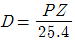
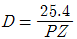
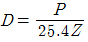
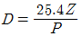
(정답률: 50%)
2과목: 기계가공법 및 안전관리
11. 왕복운동 기관에서 직선운동과 회전운동을 상호 전달할 수 있는 축은?
- 직선 축
- 크랭크 축
- 중공 축
- 플렉시블 축
(정답률: 67%)
12. 재료의 안전성을 고려하여 허용할 수 있는 최대응력을 무엇이라 하는가?
- 주 응력
- 사용 응력
- 수직 응력
- 허용 응력
(정답률: 86%)
13. 스프링의 길이가 100mm인 한 끝을 고정하고, 다른 끝에 무게 40N의 추를 달았더니 스프링의 전체 길이가 120mm로 늘어났을 때 스프링 상수는 몇 N/mm 인가?
- 8
- 4
- 2
- 1
(정답률: 63%)
14. 다음 벨트 중에서 인장강도가 대단히 크고 수명이 가장 긴 벨트는?
- 가죽 벨트
- 강철 벨트
- 고무 벨트
- 섬유 벨트
(정답률: 70%)
15. 큰 토크를 전달시키기 위해 같은 모양의 키 홈을 등 간격으로 파서 축과 보스를 잘 미끄러질 수 있도록 만든 기계 요소는?
- 코터
- 묻힘 키
- 스플라인
- 테이퍼 키
(정답률: 65%)
16. 와이어 컷 방전가공에 대한 설명으로 틀린 것은?
- 복잡한 형상의 절단 작업이 가능하다.
- 장시간 동안 무인으로 작동할 수 있다.
- 경도가 높은 금속도 절단이 가능하다.
- 방전 후 사용한 와이어는 재사용이 가능하다.
(정답률: 70%)
17. 다음 중 비절삭작업에 속하지 않는 가공법은?
- 단조
- 호빙
- 압연
- 주조
(정답률: 64%)
18. 다음 중 절삭 저항력이 가장 작은 칩의 형태는?
- 열단형 칩
- 전단형 칩
- 균열형 칩
- 유동형 칩
(정답률: 69%)
19. 연삭숫돌 구성의 3요소에 포함되지 않는 것은?
- 입자
- 결합제
- 조직
- 기공
(정답률: 50%)
20. 선반 작업의 안전 사항으로 틀린 것은?
- 절삭공구는 가능한 길게 고정한다.
- 칩의 비산에 대비하여 보안경을 착용한다.
- 공작물 측정은 정지 후에 한다.
- 칩은 맨손으로 제거하지 않는다.
(정답률: 87%)
21. 수직 밀링머신에서 넓은 평면을 능률적으로 가공하는데 적합한 커터는?
- 더브테일 커터
- 사이트밀링 커터
- 정면 커터
- T 커터
(정답률: 62%)
22. 미터나사에서 지름이 14mm, 피치가 2mm의 나사를 태핑하기 위한 드릴구멍의 지름은 보통 몇 mm로 하는가?
- 16
- 14
- 12
- 10
(정답률: 62%)
23. 두께 30 mm의 탄소강판에 절삭속도 20 m/min, 드릴의 지름 10 mm, 이송 0.2 mm/rev로 구멍을 뚫을 때 절삭 소요시간은 약 몇 분인가?(단, 드릴의 원추 높이는 5.8 mm, 구멍은 관통하는 것으로 한다.)
- 0.11
- 0.28
- 0.75
- 1.11
(정답률: 44%)
24. 수평형 브로칭 머신의 설명과 가장 거리가 먼 것은?
- 직립형에 비해 가공물 고정이 불편하다.
- 기계의 조작이 쉽다.
- 가동 및 안전성, 기계의 점검 등이 직립형보다 우수하다.
- 직립형에 비해 설치면적이 적다.
(정답률: 60%)
25. NC 공작기계의 절삭 제어방식 종류가 아닌 것은?
- 위치결정 제어
- 직선절삭 제어
- 곡선절삭 제어
- 윤곽절삭 제어
(정답률: 46%)
3과목: 기계제도
26. 다음의 평면도에 해당하는 것은(제3각법의 경우)
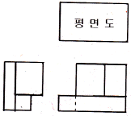
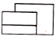
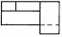
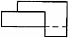
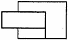
(정답률: 53%)
27. 도면 관리에서 다른 도면과 구별하고 도면 내용을 직접 보지 않고도 제품의 종류 및 형식 등의 도면 내용을 알수 있도록 하기 위해 기입하는 것은?
- 도면 번호
- 도면 척도
- 도면 양식
- 부품 번호
(정답률: 62%)
28. 입체도에서 화살표 방향을 정면도로 할 때, 제3각법으로 투상한 것 중 옳은 것은?
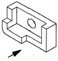
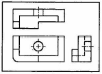
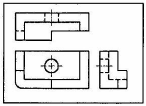
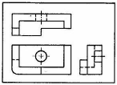
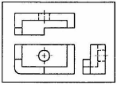
(정답률: 75%)
29. 산술 평균 거칠기 표시 기호는?
- Ra
- Rs
- Rz
- Ru
(정답률: 77%)
30. 다음 기하공차의 종류 중 위치공차 기호가 아닌 것은?
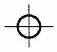
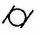
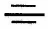
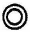
(정답률: 62%)
31. 도면에 치수를 기입 할 때의 주의사항으로 틀린 것은?
- 치수는 정면도, 측면도, 평면도에 보기 좋게 골고루 배치한다.
- 외형선, 중심선, 혹은 그 연장선을 치수선으로 사용하지 않는다.
- 치수는 가능한 한 도형의 오른쪽과 윗 쪽에 기입한다.
- 한 도면 내에서는 같은 크기의 숫자로 치수를 기입한다.
(정답률: 74%)
32. 아래 도면의 기하공차가 나타내고 있는 것은?
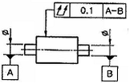
- 원통도
- 진원도
- 온 흔들림
- 원주 흔들림
(정답률: 64%)
33. 조립한 상태의 치수 허용 한계값을 나타낸 것으로 틀린 것은?
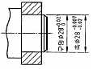
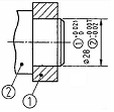
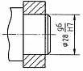
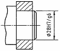
(정답률: 56%)
34. 투상도법에서 원근감을 갖도록 나타내어 건축물 등의 공사 설명용으로 주로 사용하는 투상도법은?
- 등각투상도
- 투시도
- 정투상도
- 부등각 투상도
(정답률: 47%)
35. 다음은 KS 제도 통칙에 따른 재료 기호이다. KS D 3752 SM 45C 이 기호에 대한 설명 중 옳은 것을 모두 고르면?
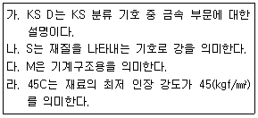
- 가, 나
- 가, 라
- 가, 나, 다
- 나, 다, 라
(정답률: 66%)
36. 제작 도면으로 사용할 도면의 같은 장소에 숫자와 여러 종류의 선이 겹치게 될 때 가장 우선 되는 것은?
- 해칭선
- 치수선
- 숨은선
- 숫자
(정답률: 68%)
37. 대상물의 구멍, 홈 등 모양만을 나타내는 것으로 충분한 경우에 그 부분만을 도시하는 그림과 같은 투상도는?
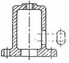
- 회전 투상도
- 국부 투상도
- 부분 투상도
- 보조 투상도
(정답률: 72%)
38. 그림과 같은 단면도를 무슨 단면도라 하는가?
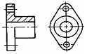
- 회전도시 단면도
- 부분 단면도
- 한쪽 단면도
- 온 단면도
(정답률: 54%)
39. 다음 그림의 면의 지시기호이다. 그림에서 M은 무엇을 의미하는가?
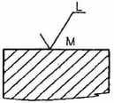
- 밀링 가공
- 줄무늬 방향
- 표면 거칠기
- 선반 가공
(정답률: 77%)
40. 가상선의 용도에 대한 설명으로 틀린 것은?
- 인접 부분을 참고로 표시하는데 사용한다.
- 수면, 유면 등의 위치를 표시하는데 사용한다.
- 가공 전, 가공 후의 모양을 표시하는데 사용한다.
- 도시된 단면의 앞쪽에 있는 부분을 표시하는데 사용한다.
(정답률: 48%)
41. 치수 보조 기호의 설명으로 틀린 것은?
- 구의 지름 - Sø
- 구의 반지름 - SR
- 45° 모따기 - C
- 이론적으로 정확한 치수 - (15)
(정답률: 87%)
42. IT기본공차의 등급은 모두 몇 등급으로 되어 있는가?
- 10등급
- 18등급
- 20등급
- 25등급
(정답률: 74%)
43. 중간 끼워맞춤에서 구멍의 치수는
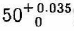
, 축의 치수가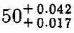
일 때 최대 죔새는?- 0.033
- 0.008
- 0.018
- 0.042
(정답률: 78%)
44. 다음 그림과 같은 리브 둥글기 반지름이 현저하게 다른 리브를 그릴 때 평면도로 옳은 것은?
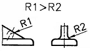
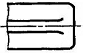
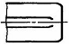
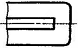
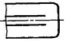
(정답률: 69%)
45. 다음 도면의 양식 중에서 반드시 마련해야하는 양식은?
- 도면의 구역
- 중심마크
- 비교눈금
- 재단마크
(정답률: 77%)
46. 다음 그림은 어떤 기계요소를 나타낸 것인가?
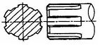
- 원뿔 키
- 접선 키
- 세레이션
- 스플라인
(정답률: 75%)
47. 수나사 막대의 양 끝에 나사를 깍은 머리 없는 볼트로서, 한끝은 본체에 박고 다른 끝은 너트로 죌 때 쓰이는 것은?
- 관통 볼트
- 미니추어 볼트
- 스터드 볼트
- 탭 볼트
(정답률: 65%)
48. 다음 중 플러그 용접 기호는?
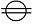
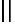
(정답률: 65%)
49. <보기>의 설명을 나사표시 방법으로 옳게 나타낸 것은?
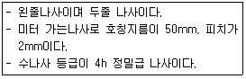
- L 2줄 M50×2-4h
- 왼 2N TM50×2-4h
- 2N M50×2-4h
- 왼 2줄 M2×50-4h
(정답률: 58%)
50. 평 벨트 풀리의 도시방법으로 틀린 것은?
- 벨트 풀리는 축직각 방향의 투상을 주투상도로 할 수 있다.
- 암은 길이 방향으로 절단하여 단면을 도시하지 않는다.
- 대칭형인 벨트 풀리는 생략하지 않고 되도록 전체를 그려야 한다.
- 암의 테이퍼 부분 치수를 기입할 때 치수 보조선은 경사선에 그어서 치수를 나타낼 수 있다.
(정답률: 66%)
51. 베어링 호칭번호가 "7210CDTP5" 다음과 같을 때 이에 대한 설명으로 틀린 것은?
- 베어링 계열 기호는 "72" 이다.
- 안지름 번호는 "10"으로 호칭 베어링의 안지름이 50 mm 이다.
- 접촉각 기호는 "C" 이다.
- 정밀도 등급은 "DT" 이다.
(정답률: 55%)
52. 스프링의 종류 및 모양만으로 간략도로 도시하는 경우 표시 방법으로 옳은 것은?
- 재료의 중심선을 굵은 실선으로 그린다.
- 재료의 중심선을 가는 2점 쇄선으로 그린다.
- 재료의 중심선을 가는 실선으로 그린다.
- 재료의 중심선을 굵은 1점 쇄선으로 그린다.
(정답률: 46%)
53. 배관제도에서 관의 끝부분이 용접식 캡의 경우를 나타내는 그림 기호는?
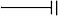
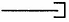
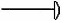
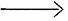
(정답률: 61%)
54. 모듈 m인 한 상의 외접 스퍼기어가 맞물려 있을 때에 각각의 잇수를 Z1, Z2라면 두 기어의 중심거리를 구하는 계산식은?
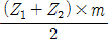
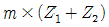
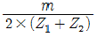
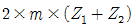
(정답률: 78%)
55. 다음 중 센터 구멍이 필요하지 않은 경우를 나타낸 기호는?
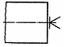
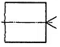
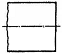
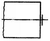
(정답률: 53%)
56. 기어의 도시 방법으로 옳은 것은?(단, 단면도가 아닌 일반 투상도로 나타낼 때로 가정한다.)
- 잇봉우리원은 가는 실선으로 그린다.
- 피치원을 가는 1점 쇄선으로 그린다.
- 이골원은 가는 2점 쇄선으로 그린다.
- 잇줄 방향은 보통 2개의 굵은 실선으로 그린다.
(정답률: 70%)
57. 다음 중 입력장치로 볼 수 없는 것은?
- 터치패드
- 라이트펜
- 3D 프린터
- 스캐너
(정답률: 82%)
58. 컴퓨터에서 중앙처리장치의 구성으로만 짝지어진 것은?
- 출력장치, 입력장치
- 제어장치, 입력장치
- 보조기억장치, 출력장치
- 제어장치, 연산장치
(정답률: 76%)
59. 각 좌표계에서 현재위치, 즉 출발점을 항상 원점으로 하여 임의의 위치까지의 거리로 나타내는 좌표계 방식은?
- 직교 좌표계
- 극 좌표계
- 상대 좌표계
- 원통 좌표계
(정답률: 73%)
60. 면을 사용하여 은선을 제거시킬 수 있고 또 면의 구분이 가능하므로 가공면을 자동적으로 인식처리할 수 있어서 NC data에 의한 NC가공작업이 가능하나 질량 등의 물리적 성질은 구할 수 없는 모델링 방법은?
- 서피스 모델링
- 솔리드 모델링
- 시스템 모델링
- 와이어프레임 모델링
(정답률: 56%)